Sep 2024 – Jun 2027
Tsinghua University
M.S. in Artificial Intelligence
Shenzhen International Graduate School
Embodied AI Human–Robot Interaction
I’m a master’s student in artificial intelligence at Tsinghua University, where I work with my advisors, Prof. Yansong Tang and Prof. Jiwen Lu, in the THU-IVG Lab. I earned my B.S. in artificial intelligence from Beijing Normal University in 2024.
As a research intern at JD Joy Future Academy, I study how robots can learn manipulation skills from first-person videos of people performing everyday tasks. I’m a core contributor to JoyAI-RA 0.1/0.5, a series of foundation models for robot manipulation.
Previously, at Tencent Robotics-X, I worked with Dr. Yonggen Ling on TAIHRI (ECCV 2026), a vision-language model that helps a robot identify which part of a person’s body to attend to when following a motion command.
Sep 2024 – Jun 2027
M.S. in Artificial Intelligence
Shenzhen International Graduate School
Sep 2020 – Jun 2024
B.S. in Artificial Intelligence
School of Artificial Intelligence
Mar 2026 – Present · Shenzhen, China
Egocentric human videos for VLA/WAM pretraining.
Working with Dr. Zhihao Yuan.
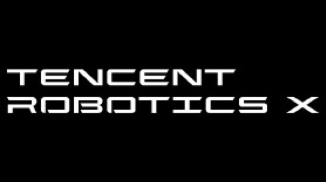
May 2025 – Mar 2026 · Shenzhen, China
VLM for human-robot interaction.
Worked with Dr. Yonggen Ling.
Grouped by research topic. Highlighted roles indicate first authorship or core contributions.
* Equal contribution · # Corresponding author
Embodied foundation models, interactive perception, and reconstruction
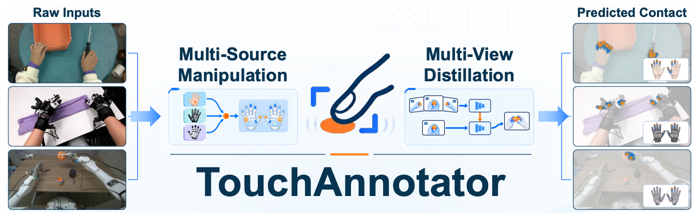
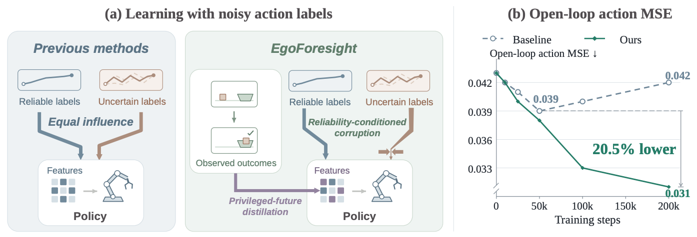
arXiv, 2026
EgoForesight learns robot policies from demonstrations and first-person human video. It weights action labels by their reliability and uses what happens next in the video to help predict actions.
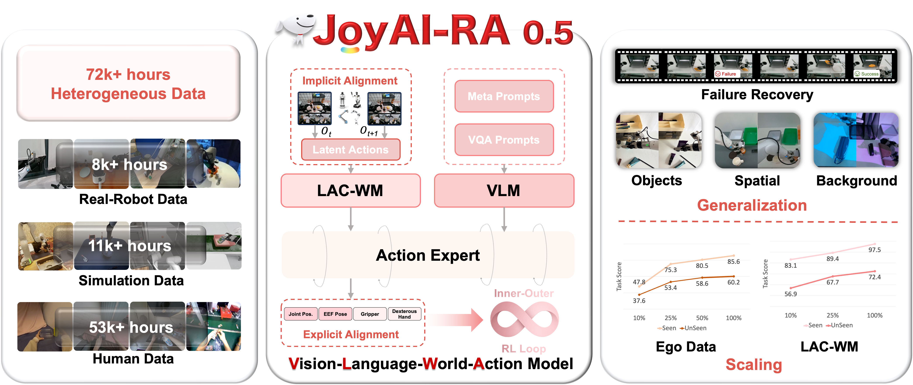
arXiv, 2026
A generalist Vision-Language-World-Action (VLWA) framework that couples physical world-dynamics priors with visual semantics and scales manipulation learning across such data via dual action alignment.
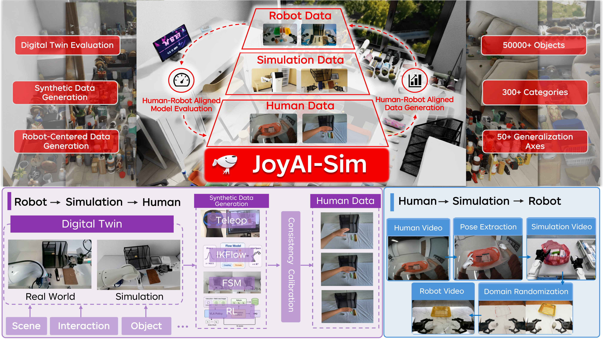
arXiv, 2026
A simulation data transformation toolchain, Robot ⇌ Simulation ⇌ Human, built upon the embodied data pyramid.
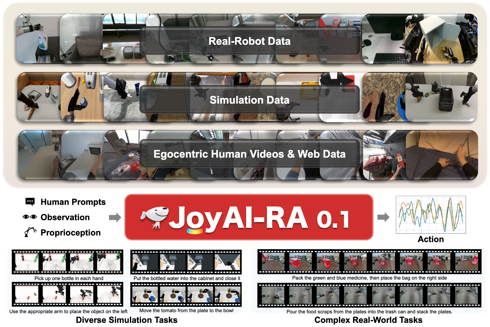
arXiv, 2026
A vision-language-action (VLA) embodied foundation model tailored for generalizable robotic manipulation.
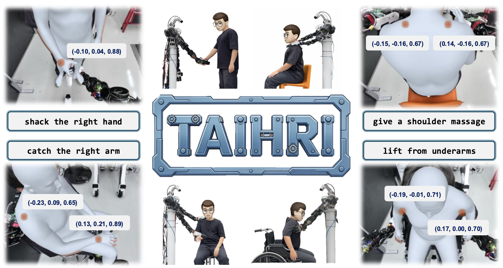
European Conference on Computer Vision (ECCV), 2026
We propose TAIHRI, the first vision-language model (VLM) tailored for close-range HRI perception, capable of understanding users' motion commands and directing the robot's attention to the most task-relevant keypoints.
Robust 3D human representation under occlusion
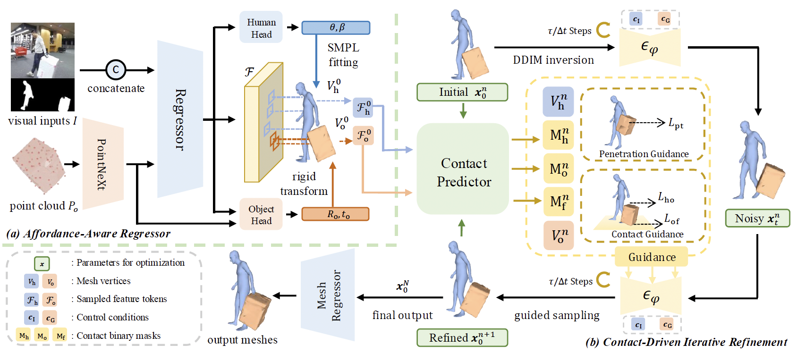
IEEE International Conference on Computer Vision (ICCV), 2025
We propose ScoreHOI, a framework for human-object interaction reconstruction via score-guided diffusion to enhance the physical plausibility.
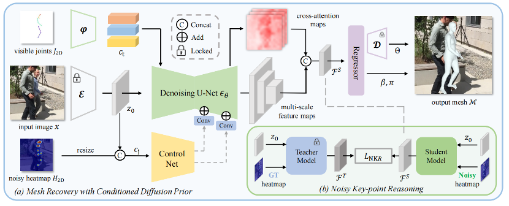
IEEE/CVF Conference on Computer Vision and Pattern Recognition (CVPR), 2024
We propose a new method to exploit diffusion priors for human mesh recovery (HMR) in occlusion and crowded scenarios.
Fast generative priors for image enhancement and super-resolution
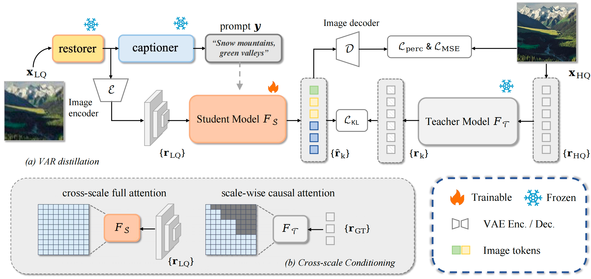
The Fourteenth International Conference on Learning Representations (ICLR), 2026
We introduce VARestorer, a one-step VAR distillation framework for real-world image super-resolution that mitigates error accumulation.
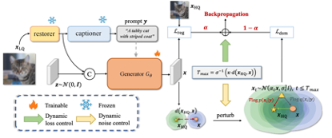
The Thirteenth International Conference on Learning Representations (ICLR), 2025
We propose InstaRevive, a straightforward yet powerful image enhancement framework that employs score-based diffusion distillation to leverage strong generative capabilities and reduce the number of sampling steps.
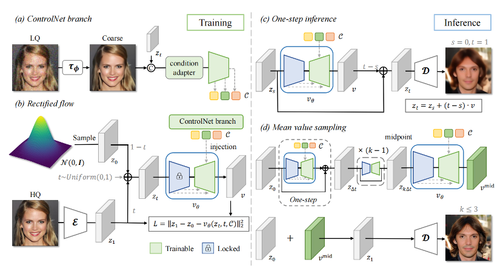